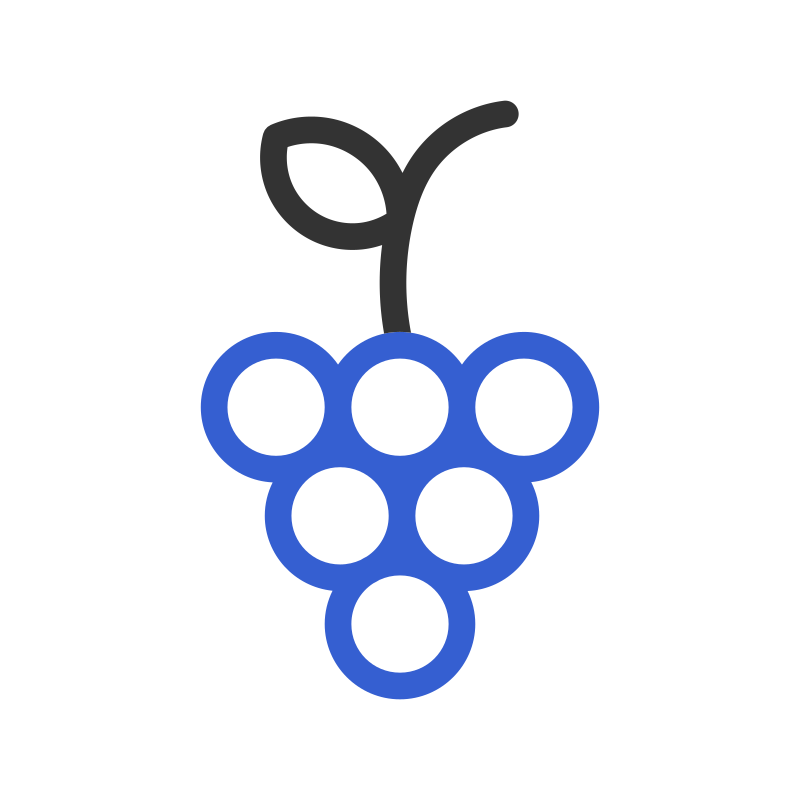

<div>
    <div class="page-content">
        <router-outlet></router-outlet>
    </div>
    <nav>
        <div class="flex justify-center absolute bottom-0 p-3 w-full">
            <div class="flex justify-between gap-4 rounded-full p-2 bg-blue-500 shadow-md">
                <div class="w-16 h-16 flex justify-center items-center text-blue-500 rounded-full p-2">
                    
                </div>
                <div class="w-16 h-16 flex justify-center items-center text-blue-500 bg-slate-50 rounded-full overflow-hidden p-2 shadow-slate-800 shadow-sm">
                    <a routerLink="/vines" routerLinkActive="active" ariaCurrentWhenActive="page">
                        
                    </a>
                </div>
                <div class="w-16 h-16 flex justify-center items-center text-blue-500 rounded-full overflow-hidden p-2">
                    
                </div>
            </div>
        </div>
    </nav>
</div>